تحليل مبدأ الإنتروبيا العظمى في أنظمة شبكية ذات تسجيلات قصيرة الزمن
الملخص
في كثير من الأنظمة الواقعية، يوفر تحليل مبدأ الإنتروبيا العظمى (MEP) توصيفا فعالا للتوزيع الاحتمالي لحالات الشبكة. غير أن تنفيذ تحليل MEP يتطلب عادة، بوجه عام، تسجيلا طويلا بما يكفي للبيانات، مثل تسجيلات لساعات من إطلاق العصبونات في الشبكات العصبونية. ولم تعالج بالكامل بعد مسألة ما إذا كان تحليل MEP قابلا للتطبيق بنجاح على أنظمة شبكية ذات بيانات مأخوذة من تسجيلات قصيرة. في هذا العمل، ندرس العلاقات الكامنة بين التوزيعات الاحتمالية والعزوم والتآثرات الفعالة في تحليل MEP، ثم نبين أنه، مع تسجيلات قصيرة لديناميات الشبكة، يمكن تطبيق تحليل MEP لإعادة بناء التوزيعات الاحتمالية لحالات الشبكة بشرط أن يكون نشاط العقد في الشبكة غير متزامن. وباستخدام قطارات الشوكات المستخرجة من شبكات عصبونية من نمط Hodgkin-Huxley ومن تجارب فيزيولوجية كهربائية، نتحقق من نتائجنا ونبرهن أن تحليل MEP يوفر أداة لدراسة خصائص ترميز الجمهرة العصبونية حتى في التسجيلات القصيرة.
- PACS numbers
-
89.70.Cf, 87.19.lo, 87.19.ls, 87.19.ll
pacs:
تظهر رموز PACS الصالحة هناالمقدمة
استعملت نماذج الحالات الثنائية لوصف نشاط العقد في كثير من الأنظمة
الشبكية، مثل الشبكات العصبونية في علم الأعصاب schneidman2006weak ; shlens2006structure ; xu2016dynamical .
إن فهم توزيع ديناميات الحالات الثنائية في الشبكة مهم في كشف وظيفة
الشبكة الكامنة، ولا سيما في علم الأعصاب، حيث تشير النتائج النظرية
والتجريبية معا إلى أن جماعات العصبونات تنجز الحسابات احتماليا من خلال
أنماط إطلاقها knill2004bayesian ; karlsson2009awake . فعلى سبيل المثال، ثبت أن
التوزيعات الإحصائية لأنماط إطلاق الشبكات العصبونية تنفذ إعادات تشغيل
في اليقظة لخبرات بعيدة في حصين الجرذ karlsson2009awake .
لذلك فإن دراسة خصائص توزيعات أنماط الإطلاق العصبوني ستساعد على فهم
كيفية ترميز الشبكات العصبونية للمعلومات morcos2016history . غير
أن هذه مهمة صعبة، إذ إن عدد كل الحالات الشبكية الممكنة ينمو أسيا مع
ازدياد حجم الشبكة، أي  لشبكة تضم
لشبكة تضم  عقدا ثنائية الحالة. وتمثل هذه الأبعاد العالية تحديا أمام القياس المباشر
لتوزيع حالات الشبكة في التجارب الفيزيولوجية الكهربائية، ولا سيما في
حالة قياسات داخل الجسم الحي على حيوانات يقظة، ومن ثم تنشأ
الصعوبة في فهم مخططات الترميز في الشبكات العصبونية.
عقدا ثنائية الحالة. وتمثل هذه الأبعاد العالية تحديا أمام القياس المباشر
لتوزيع حالات الشبكة في التجارب الفيزيولوجية الكهربائية، ولا سيما في
حالة قياسات داخل الجسم الحي على حيوانات يقظة، ومن ثم تنشأ
الصعوبة في فهم مخططات الترميز في الشبكات العصبونية.
يعد تحليل مبدأ الإنتروبيا العظمى (MEP) طريقة إحصائية تستعمل لاستنتاج التوزيع الاحتمالي الأقل تحيزا لحالات الشبكة بتعظيم إنتروبيا Shannon مع قيود معطاة، أي العزوم حتى رتبة معينة jaynes1957information . ويسمى التوزيع الاحتمالي المستنتج توزيع MEP. فعلى سبيل المثال، في ظل قيود العزوم منخفضة الرتبة، يعطي توزيع MEP تقديرا دقيقا للتوزيع الإحصائي لحالات الشبكة في مجالات علمية كثيرة، مثل علم الأعصاب schneidman2006weak ; shlens2006structure ; tang2008maximum ; xu2016dynamical ، والأحياء sakakibara2009protein ; sulkowska2012genomics ; mantsyzov2014maximum ، وعلم التصوير saremi2013hierarchical ، والاقتصاد golan1996maximum ; squartini2013early ، واللسانيات stephens2010statistical ، والأنثروبولوجيا hernando2013workings ، وعلوم الغلاف الجوي والمحيطات khatiwala2009reconstruction .
ومع ذلك تبقى مسألة عملية ومهمة غير واضحة، وهي مدى جودة أداء تحليل MEP
عندما يكون زمن تسجيل ديناميات عقد الشبكة قصيرا. ويرجع ذلك إلى أن
تسجيلا طويلا جدا يكون غالبا مطلوبا لإجراء تحليل MEP، مثل ساعات لشبكة
من  عصبونا schneidman2006weak . وهذه التسجيلات الطويلة تكون عادة
غير عملية بسبب الكلفة أو حدود القدرة. فمثلا، تجعل القيود الفيزيولوجية
مثل إجهاد العصبونات تسجيل حالة الشبكات العصبونية لمدة طويلة أمرا بالغ
الصعوبة، ولا سيما في تسجيلات داخل الجسم الحي على حيوانات يقظة. وفي
الوقت نفسه، فإن البيانات المستحصلة من التسجيلات القصيرة تلتقط كثيرا من
حالات النشاط بصورة ضعيفة، مما يؤدي إلى أوصاف غير صحيحة للتوزيع
الاحتمالي لحالات الشبكة. وقد تؤدي القياسات غير الكافية الناجمة عن
التسجيلات القصيرة إلى سوء فهم بنية ترميز المعلومات المضمنة في حالات
نشاط الشبكة ohiorhenuan2010sparse . لذلك من المهم تقدير توزيع احتمالي دقيق
لحالات الشبكة من تسجيلات قصيرة تكون فيها أنشطة شبكية كثيرة ممثلة تمثيلا
ناقضا.
عصبونا schneidman2006weak . وهذه التسجيلات الطويلة تكون عادة
غير عملية بسبب الكلفة أو حدود القدرة. فمثلا، تجعل القيود الفيزيولوجية
مثل إجهاد العصبونات تسجيل حالة الشبكات العصبونية لمدة طويلة أمرا بالغ
الصعوبة، ولا سيما في تسجيلات داخل الجسم الحي على حيوانات يقظة. وفي
الوقت نفسه، فإن البيانات المستحصلة من التسجيلات القصيرة تلتقط كثيرا من
حالات النشاط بصورة ضعيفة، مما يؤدي إلى أوصاف غير صحيحة للتوزيع
الاحتمالي لحالات الشبكة. وقد تؤدي القياسات غير الكافية الناجمة عن
التسجيلات القصيرة إلى سوء فهم بنية ترميز المعلومات المضمنة في حالات
نشاط الشبكة ohiorhenuan2010sparse . لذلك من المهم تقدير توزيع احتمالي دقيق
لحالات الشبكة من تسجيلات قصيرة تكون فيها أنشطة شبكية كثيرة ممثلة تمثيلا
ناقضا.
في هذا العمل، نبرهن أن تحليل MEP يمكن أن يعطي تقديرا دقيقا للتوزيع
الاحتمالي لحالات الشبكة من تسجيل بيانات قصير الزمن إذا كان نشاط العقد
في الشبكة غير متزامن (شبكة غير متزامنة). ولتحقيق ذلك، نبين أولا وجود
تطبيق واحد لواحد (يرمز إليه بالمصفوفة كاملة الرتبة  لشبكة حجمها
لشبكة حجمها
 ) بين التوزيع الاحتمالي لحالات الشبكة (الممثل بمتجه حجمه
) بين التوزيع الاحتمالي لحالات الشبكة (الممثل بمتجه حجمه
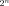
،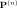
) وجميع العزوم المقابلة (الممثلة بمتجه حجمه ،
،  ). وبما أن توزيع MEP كامل الرتبة (وهو
التوزيع المستحصل في تحليل MEP مع قيود جميع العزوم
). وبما أن توزيع MEP كامل الرتبة (وهو
التوزيع المستحصل في تحليل MEP مع قيود جميع العزوم  )
والتوزيع الاحتمالي
)
والتوزيع الاحتمالي  متماثلان (فلهما جميع العزوم نفسها
متماثلان (فلهما جميع العزوم نفسها
 )، فإننا نشتق تطبيقا آخر واحدا لواحد (يرمز إليه بالمصفوفة
كاملة الرتبة
)، فإننا نشتق تطبيقا آخر واحدا لواحد (يرمز إليه بالمصفوفة
كاملة الرتبة 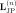
لشبكة حجمها ) بين جميع التآثرات الفعالة
(مضاعفات Lagrange المقابلة لقيود جميع العزوم في تعبير توزيع MEP كامل
الرتبة) والتوزيع الاحتمالي
) بين جميع التآثرات الفعالة
(مضاعفات Lagrange المقابلة لقيود جميع العزوم في تعبير توزيع MEP كامل
الرتبة) والتوزيع الاحتمالي  . وتبين هذه التطبيقات أن جميع
العزوم وجميع التآثرات الفعالة يمكن أن تمثل على نحو مكافئ توزيعا
احتماليا لحالات الشبكة في شبكة عامة من أي حجم.
. وتبين هذه التطبيقات أن جميع
العزوم وجميع التآثرات الفعالة يمكن أن تمثل على نحو مكافئ توزيعا
احتماليا لحالات الشبكة في شبكة عامة من أي حجم.
بعد ذلك نستعمل التمثيلات المكافئة أعلاه لنبين أنه في شبكة غير متزامنة
يعطي تحليل MEP منخفض الرتبة تقديرا دقيقا للتوزيع الاحتمالي لحالات
الشبكة انطلاقا من تسجيل قصير الزمن. ففي الشبكة غير المتزامنة، يكون
احتمال أن تكون عقد كثيرة فعالة في نافذة زمنية واحدة لأخذ العينات (ويشار
إلى ذلك باسم الحالات عالية النشاط) صغيرا جدا. ومن خلال التطبيق
من التآثرات الفعالة إلى التوزيع الاحتمالي،  ، نلاحظ أن احتمال
حالة عالية النشاط يمكن أن يكتب على شكل مجموع للتآثرات الفعالة المقابلة
لقيود عزوم تلك العقد الفعالة. وفي الشبكة غير المتزامنة تكون التآثرات
الفعالة عالية الرتبة (أي مضاعفات Lagrange المقابلة لقيود العزوم عالية
الرتبة) صغيرة عادة shlens2006structure ; schneidman2006weak ; tang2008maximum ; cavagna2014dynamical ; watanabe2013pairwise بالمقارنة مع التآثرات الفعالة منخفضة
الرتبة (أي مضاعفات Lagrange المقابلة لقيود العزوم منخفضة الرتبة). ومن
ثم يمكن تقدير احتمالات الحالات عالية النشاط تقديرا جيدا بواسطة التآثرات
الفعالة منخفضة الرتبة المهيمنة. ويبين تحليل MEP أن التآثرات الفعالة
منخفضة الرتبة يمكن تقديرها من العزوم منخفضة الرتبة عبر خوارزمية تحجيم
تكرارية واسعة الاستعمال (انظر الملحق A للتفاصيل). ولذلك فقد يكون
ممكنا قياس العزوم منخفضة الرتبة بدقة باستخدام تسجيل قصير (كما يناقش
أدناه)، وقد تستعمل لإجراء تحليل MEP للحصول على تقدير جيد للتوزيع
الاحتمالي لحالات الشبكة.
، نلاحظ أن احتمال
حالة عالية النشاط يمكن أن يكتب على شكل مجموع للتآثرات الفعالة المقابلة
لقيود عزوم تلك العقد الفعالة. وفي الشبكة غير المتزامنة تكون التآثرات
الفعالة عالية الرتبة (أي مضاعفات Lagrange المقابلة لقيود العزوم عالية
الرتبة) صغيرة عادة shlens2006structure ; schneidman2006weak ; tang2008maximum ; cavagna2014dynamical ; watanabe2013pairwise بالمقارنة مع التآثرات الفعالة منخفضة
الرتبة (أي مضاعفات Lagrange المقابلة لقيود العزوم منخفضة الرتبة). ومن
ثم يمكن تقدير احتمالات الحالات عالية النشاط تقديرا جيدا بواسطة التآثرات
الفعالة منخفضة الرتبة المهيمنة. ويبين تحليل MEP أن التآثرات الفعالة
منخفضة الرتبة يمكن تقديرها من العزوم منخفضة الرتبة عبر خوارزمية تحجيم
تكرارية واسعة الاستعمال (انظر الملحق A للتفاصيل). ولذلك فقد يكون
ممكنا قياس العزوم منخفضة الرتبة بدقة باستخدام تسجيل قصير (كما يناقش
أدناه)، وقد تستعمل لإجراء تحليل MEP للحصول على تقدير جيد للتوزيع
الاحتمالي لحالات الشبكة.
وللحصول على تقدير دقيق للعزوم منخفضة الرتبة، نستعمل خصائص التطبيق بين
التوزيع الاحتمالي لحالات الشبكة والعزوم المقابلة للشبكة،  . يبين
هذا التطبيق أن العزوم منخفضة الرتبة يمكن أن تكتب على شكل مجموع لكل
احتمالات الحالات التي تكون فيها تلك العقد المقابلة لقيود العزوم فعالة؛
فمثلا عزم الرتبة الأولى للعقدة
. يبين
هذا التطبيق أن العزوم منخفضة الرتبة يمكن أن تكتب على شكل مجموع لكل
احتمالات الحالات التي تكون فيها تلك العقد المقابلة لقيود العزوم فعالة؛
فمثلا عزم الرتبة الأولى للعقدة  هو مجموع كل احتمالات حالات
الشبكة التي تكون فيها العقدة
هو مجموع كل احتمالات حالات
الشبكة التي تكون فيها العقدة  فعالة. ويشمل هذا المجموع كلا من
احتمالات الحالات عالية النشاط واحتمالات الحالات منخفضة النشاط التي تكون
فيها عقد قليلة فعالة في نافذة زمنية واحدة لأخذ العينات. وبما أن احتمال
رصد حالة عالية النشاط صغير في شبكة غير متزامنة، فإن احتمالات الحالات
منخفضة النشاط تهيمن على المجموع. وينتج من ذلك تقدير جيد للعزوم منخفضة
الرتبة، لأن احتمالات الحالات منخفضة النشاط يمكن أن تظل مقيسة جيدا في
تسجيل قصير، كما يمكن أن تنخفض ضوضاء تقدير العزوم منخفضة الرتبة أكثر
بفعل جمع احتمالات الحالات منخفضة النشاط saulis2012limit .
فعالة. ويشمل هذا المجموع كلا من
احتمالات الحالات عالية النشاط واحتمالات الحالات منخفضة النشاط التي تكون
فيها عقد قليلة فعالة في نافذة زمنية واحدة لأخذ العينات. وبما أن احتمال
رصد حالة عالية النشاط صغير في شبكة غير متزامنة، فإن احتمالات الحالات
منخفضة النشاط تهيمن على المجموع. وينتج من ذلك تقدير جيد للعزوم منخفضة
الرتبة، لأن احتمالات الحالات منخفضة النشاط يمكن أن تظل مقيسة جيدا في
تسجيل قصير، كما يمكن أن تنخفض ضوضاء تقدير العزوم منخفضة الرتبة أكثر
بفعل جمع احتمالات الحالات منخفضة النشاط saulis2012limit .
ومع أن الإجراء الموصوف في هذا العمل يمكن تطبيقه على أي شبكة غير متزامنة ذات ديناميات ثنائية، فإننا نستعمل هنا قطارات الشوكات المستحصلة من محاكاة ديناميات الشبكات العصبونية من نمط Hodgkin-Huxley (HH) ومن تجارب فيزيولوجية كهربائية، لنبرهن أنه يمكن إجراء تحليل MEP لتقدير التوزيع الاحتمالي لحالات الشبكة بدقة من تسجيلات قصيرة الزمن. وفي حالة بيانات المحاكاة من شبكات HH العصبونية، نطور شبكة HH العصبونية لمدة تشغيل قصيرة قدرها . ومع قيود العزوم من الرتبتين الأولى والثانية للبيانات من هذا التسجيل القصير، نحصل على توزيع حالات الشبكة من تحليل MEP. وللتحقق من دقة توزيع MEP، نطور شبكة HH العصبونية لمدة تشغيل طويلة قدرها ونقيس مباشرة التوزيع الاحتمالي لحالات الشبكة للمقارنة. أما في حالة البيانات التجريبية من القياسات الفيزيولوجية الكهربائية، فنستعمل بيانات مسجلة من القشرة البصرية الأولية (V1) في قرود macaque مخدرة (انظر الملحق E للتفاصيل)، حيث نستعمل بيانات كبيانات تسجيل طويل للحصول على التوزيع الاحتمالي لحالات الشبكة، ونجري تحليل MEP من الرتبة الثانية على بيانات التسجيل القصير البالغة (
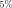
من التسجيل الكلي). وتبين نتائجنا أنه في كل من بيانات المحاكاة العددية وبيانات التجارب الفيزيولوجية الكهربائية، يتفق هذان التوزيعان، أي توزيع MEP من الرتبة الثانية والتوزيع المقيس في بيانات التسجيل الطويل، اتفاقا جيدا جدا، في حين ينحرف التوزيع الاحتمالي المقيس من التسجيل القصير عنهما بوضوح ولا يلتقط كثيرا من حالات النشاط العصبوني.الطرائق: تحليل MEP
في هذا القسم، سنعرض تحليل MEP، الذي طبق لتقدير التوزيع الاحتمالي لحالات الشبكة في كثير من الأنظمة الشبكية schneidman2006weak ; shlens2006structure ; tang2008maximum ; bury2012statistical ; cavagna2014dynamical . وتكون عملية إجراء تحليل MEP كما يأتي. لتكن
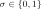
دالة على حالة عقدة في حاوية زمنية لأخذ العينات، حيث تشير 1 إلى حالة فعالة وتشير 0 إلى حالة غير فعالة. وعندئذ يرمز إلى حالة شبكة من عقد في حاوية زمنية لأخذ
العينات بالرمز
عقد في حاوية زمنية لأخذ
العينات بالرمز 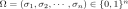
. ومن حيث المبدأ، للحصول على التوزيع الاحتمالي لـ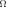
، يجب قياس كل الحالات الممكنة لـ ، أي
، أي  حالة في
المجموع. وفي حالة شبكة تضم
حالة في
المجموع. وفي حالة شبكة تضم  عصبونا، تمثل
عصبونا، تمثل  غالبا ما إذا
كان عصبون مفرد يطلق في حاوية زمنية لأخذ العينات داخل الشبكة، حيث
تقابل
غالبا ما إذا
كان عصبون مفرد يطلق في حاوية زمنية لأخذ العينات داخل الشبكة، حيث
تقابل  عصبونا في حالة إطلاق وتقابل
عصبونا في حالة إطلاق وتقابل  عصبونا في حالة صمت.
ونختار حجما نموذجيا للحاوية قدره لتحليل MEP shlens2006structure ; tang2008maximum . وتمثل
الحالة
عصبونا في حالة صمت.
ونختار حجما نموذجيا للحاوية قدره لتحليل MEP shlens2006structure ; tang2008maximum . وتمثل
الحالة  في الشبكة العصبونية نمط إطلاق جميع العصبونات في
الشبكة.
في الشبكة العصبونية نمط إطلاق جميع العصبونات في
الشبكة.
يعطى عزم الرتبة الأولى لحالة العقدة  ،
،
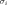
، بالعلاقة| (1) |
حيث إن  هو احتمال رصد نمط الإطلاق
هو احتمال رصد نمط الإطلاق  في التسجيل، ويمثل
حالة العقدة ذات الرتبة
في التسجيل، ويمثل
حالة العقدة ذات الرتبة  في نمط الإطلاق
في نمط الإطلاق  .
ويعطى عزم الرتبة الثانية لحالة العقدة
.
ويعطى عزم الرتبة الثانية لحالة العقدة  ،
،  ، والعقدة
، والعقدة
 ،
،
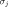
، بالعلاقة| (2) |
وتستحصل العزوم الأعلى رتبة بصورة مماثلة. لاحظ أنه في المعادلتين (1، 2)، يمكن أن يكون
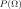
هو التوزيع الاحتمالي الحقيقي لـ ،
وفي هذه الحالة يحسب المرء العزوم الحقيقية؛ أو يمكن أن يكون
،
وفي هذه الحالة يحسب المرء العزوم الحقيقية؛ أو يمكن أن يكون  توزيعا
مرصودا لتسجيل محدود الزمن، وفي هذه الحالة يقدر المرء العزوم.
توزيعا
مرصودا لتسجيل محدود الزمن، وفي هذه الحالة يقدر المرء العزوم.
تعرف إنتروبيا Shannon لتوزيع احتمالي كما يأتي
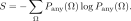 |
(3) |
وبتعظيم هذه الإنتروبيا،
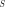
، مع الخضوع لجميع العزوم حتى الرتبة (
(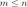
)، يحصل المرء على توزيع MEP من الرتبة لشبكة تضم
لشبكة تضم  عقدا schneidman2006weak ; shlens2006structure ; tang2008maximum . لاحظ أن عزوم الرتبة
عقدا schneidman2006weak ; shlens2006structure ; tang2008maximum . لاحظ أن عزوم الرتبة  تتكون من
جميع توقعات حاصل ضرب حالات أي
تتكون من
جميع توقعات حاصل ضرب حالات أي  عقد (مثلا، عزوم الرتبة الثانية
وفق المعادلة (2) أعلاه لأي زوج من
عقد (مثلا، عزوم الرتبة الثانية
وفق المعادلة (2) أعلاه لأي زوج من 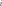
و مع
مع
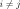
)، ومن ثم عند اعتبار قيد عزوم الرتبة يوجد عدد قدره
(عدد توليفات
يوجد عدد قدره
(عدد توليفات  عقد من
عقد من  اختيارا ممكنا) من قيود عزوم
الرتبة
اختيارا ممكنا) من قيود عزوم
الرتبة  قيد الاعتبار. وأخيرا يستحصل التوزيع الاحتمالي من الرتبة
قيد الاعتبار. وأخيرا يستحصل التوزيع الاحتمالي من الرتبة
 من المعادلة الآتية،
من المعادلة الآتية،
 |
(4) |
حيث يسمى
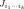
، تبعا لمصطلحات الفيزياء الإحصائية، التآثر الفعال من الرتبة ()، أي مضاعف Lagrange المقابل لقيد عزم الرتبة
()، أي مضاعف Lagrange المقابل لقيد عزم الرتبة

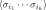
، وتكون دالة التقسيم،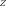
، عامل تطبيع. ويشار إلى المعادلة (4) باسم توزيع MEP من الرتبة . وعمليا
يمكن استعمال خوارزمية تحجيم تكرارية (انظر الملحق A للتفاصيل) لحل
مسألة أمثلة MEP أعلاه عدديا والحصول على التآثرات الفعالة، ومن ثم على
التوزيع الاحتمالي في المعادلة (4). وهنا، لشبكة حجمها
. وعمليا
يمكن استعمال خوارزمية تحجيم تكرارية (انظر الملحق A للتفاصيل) لحل
مسألة أمثلة MEP أعلاه عدديا والحصول على التآثرات الفعالة، ومن ثم على
التوزيع الاحتمالي في المعادلة (4). وهنا، لشبكة حجمها  ،
يشار إلى
،
يشار إلى  باسم توزيع MEP كامل الرتبة الخاضع لعزوم جميع
الرتب.
باسم توزيع MEP كامل الرتبة الخاضع لعزوم جميع
الرتب.
النتائج
تنظم النتائج على النحو الآتي. نبدأ بإظهار أن هناك مجالا واسعا من النظم الدينامية تكون فيه ديناميات الشبكة العصبونية غير متزامنة. ثم نبين أن التوزيع الاحتمالي لحالات الشبكة المقيس من تسجيل قصير الزمن (بيانات مسجلة من ديناميات شبكة HH بزمن محاكاة قصير) لا يستطيع التقاط كثير من حالات نشاط الشبكة، ومن ثم يختلف عن التوزيع الاحتمالي لحالات الشبكة المقيس من تسجيل طويل الزمن. لاحظ أننا تحققنا من أن ديناميات شبكة HH في زمن محاكاة طويل قدره تصل إلى الحالة المستقرة؛ لذلك يمكن للتوزيع الاحتمالي لحالات الشبكة المقيس من هذا التسجيل الطويل أن يمثل جيدا التوزيع الاحتمالي الحقيقي لحالات الشبكة.
ونبين بعد ذلك وجود تطبيق واحد لواحد بين التوزيع الاحتمالي لحالات الشبكة والعزوم المقابلة للشبكة. ثم ندمج هذا التطبيق مع توزيع MEP كامل الرتبة لنبين وجود تطبيق واحد لواحد بين جميع التآثرات الفعالة والتوزيع الاحتمالي لحالات الشبكة. وباستخدام هذه التطبيقات، نبرهن كذلك أن التآثرات الفعالة عالية الرتبة صغيرة في الشبكات غير المتزامنة؛ ومن ثم، ولأجل تقدير التوزيع الاحتمالي لحالات الشبكة بدقة، قد لا يحتاج المرء إلا إلى تقدير دقيق للتآثرات الفعالة منخفضة الرتبة. وأخيرا نستعمل العزوم منخفضة الرتبة المقيسة في تسجيلات قصيرة الزمن لتقدير التآثرات الفعالة منخفضة الرتبة، ونبين أن التوزيع الاحتمالي المستحصل من تحليل MEP منخفض الرتبة يتفق جيدا مع التوزيع الاحتمالي لحالات الشبكة. ويبرهن ذلك عبر كل من المحاكاة العددية لديناميات شبكات HH العصبونية غير المتزامنة والتجارب الفيزيولوجية الكهربائية أيضا.
التسجيلات قصيرة الزمن لا تستطيع تمثيل جميع حالات الشبكة
في هذا القسم، نستعمل أولا بيانات محاكاة عددية من ديناميات شبكة HH العصبونية ونبين أن التسجيلات قصيرة الزمن لا تكفي غالبا لتقدير التوزيع الاحتمالي لحالات الشبكة بدقة. وسنبرهن لاحقا هذه المسألة أيضا باستخدام بيانات تجريبية من قياسات فيزيولوجية كهربائية.
نحاكي شبكة من
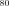
عصبونا استثارة و عصبونا تثبيطيا من نمط HH،
بكثافة اتصال قدرها
عصبونا تثبيطيا من نمط HH،
بكثافة اتصال قدرها  بين العصبونات في الشبكة. وبما أن التجارب
الفيزيولوجية لا تستطيع غالبا إلا قياس مجموعة جزئية من العصبونات، نختار
عشوائيا
بين العصبونات في الشبكة. وبما أن التجارب
الفيزيولوجية لا تستطيع غالبا إلا قياس مجموعة جزئية من العصبونات، نختار
عشوائيا 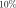
من عصبونات الشبكة ( عصبونا) ونبرهن الفروق في
التوزيع الاحتمالي المقيس مباشرة بين التسجيل القصير والتسجيل الطويل. لاحظ
أن هناك عادة ثلاثة نظم دينامية للشبكات العصبونية zhou2014granger : (i) نظام
شديد التقلب عندما يكون معدل الدخل،
عصبونا) ونبرهن الفروق في
التوزيع الاحتمالي المقيس مباشرة بين التسجيل القصير والتسجيل الطويل. لاحظ
أن هناك عادة ثلاثة نظم دينامية للشبكات العصبونية zhou2014granger : (i) نظام
شديد التقلب عندما يكون معدل الدخل،  ، منخفضا (الشكل 1a)؛
(ii) نظام متوسط عندما يكون
، منخفضا (الشكل 1a)؛
(ii) نظام متوسط عندما يكون  عاليا باعتدال (الشكل 1b)؛
(iii) نظام منخفض التقلب أو مدفوع بالمتوسط عندما يكون
عاليا باعتدال (الشكل 1b)؛
(iii) نظام منخفض التقلب أو مدفوع بالمتوسط عندما يكون  عاليا جدا
(الشكل 1c). نطور ديناميات شبكة HH العصبونية ونسجل قطارات الشوكات
لجميع العصبونات لمدة ، وهي مدة طويلة بما يكفي للحصول على
توزيع احتمالي مستقر لأنماط الإطلاق العصبوني. ثم نقارن التوزيع الاحتمالي
لحالات الشبكة المقيس مباشرة في التسجيل القصير البالغ بذلك المقيس
في التسجيل الطويل. وكما هو مبين في الشكل 2، ينحرف التوزيع
الاحتمالي المقيس لأنماط الإطلاق في التسجيل القصير انحرافا كبيرا عن
نظيره في التسجيل الطويل، وذلك في النظم الدينامية الثلاثة كلها.
عاليا جدا
(الشكل 1c). نطور ديناميات شبكة HH العصبونية ونسجل قطارات الشوكات
لجميع العصبونات لمدة ، وهي مدة طويلة بما يكفي للحصول على
توزيع احتمالي مستقر لأنماط الإطلاق العصبوني. ثم نقارن التوزيع الاحتمالي
لحالات الشبكة المقيس مباشرة في التسجيل القصير البالغ بذلك المقيس
في التسجيل الطويل. وكما هو مبين في الشكل 2، ينحرف التوزيع
الاحتمالي المقيس لأنماط الإطلاق في التسجيل القصير انحرافا كبيرا عن
نظيره في التسجيل الطويل، وذلك في النظم الدينامية الثلاثة كلها.
إن التوزيع الاحتمالي لحالات الشبكة مهم لفهم كامل للوظيفة الكامنة للشبكات knill2004bayesian ; karlsson2009awake رغم أن تسجيل بيانات طويل الزمن بما يكفي يكون غالبا مستحيلا أو غير عملي. لذلك من الضروري الحصول على تقدير دقيق للتوزيع الاحتمالي لحالات الشبكة من تسجيل قصير الزمن. ولتحقيق ذلك، ندرس فيما يلي العلاقات بين التوزيع الاحتمالي والعزوم والتآثرات الفعالة في توزيع MEP، ونبين أنه في الشبكات غير المتزامنة يعطي تحليل MEP من الرتبة الثانية تقديرا دقيقا للتوزيع الاحتمالي لحالات الشبكة.
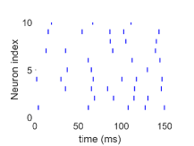
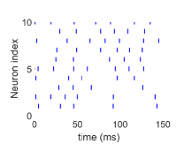
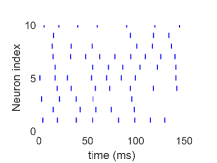
 عصبونا مختارا عشوائيا
لكل حالة. ويشير شريط قصير إلى أن العصبون ذا
الفهرس المعين يطلق عند زمن معين. اختيرت قوة الاقتران عشوائيا من
التوزيع المنتظم على الفترة ، حيث (ويكون الجهد
التالي للمشبك الاستثاري الفيزيولوجي المقابل ). أما معاملات
دخل Poisson في (a) و(b) و(c) فهي و و،
على الترتيب.
عصبونا مختارا عشوائيا
لكل حالة. ويشير شريط قصير إلى أن العصبون ذا
الفهرس المعين يطلق عند زمن معين. اختيرت قوة الاقتران عشوائيا من
التوزيع المنتظم على الفترة ، حيث (ويكون الجهد
التالي للمشبك الاستثاري الفيزيولوجي المقابل ). أما معاملات
دخل Poisson في (a) و(b) و(c) فهي و و،
على الترتيب. 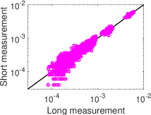
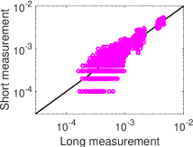
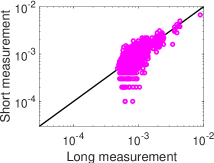
 ، في كل حالة) في الشكل 1، على الترتيب.
، في كل حالة) في الشكل 1، على الترتيب.تطبيق واحد لواحد بين التوزيع الاحتمالي والعزوم
لإيضاح العلاقة بين التوزيع الاحتمالي الحقيقي لحالات الشبكة،  ،
والعزوم المقابلة، نعرض عدة ترميزات تسهيلا للنقاش. أولا، نرمز إلى المتجه
،
والعزوم المقابلة، نعرض عدة ترميزات تسهيلا للنقاش. أولا، نرمز إلى المتجه
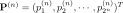
بوصفه المتجه الذي يحتوي التوزيع الاحتمالي لحالات الشبكة لشبكة ذات عقد، ونرمز إلى المتجه
عقد، ونرمز إلى المتجه 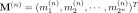
بوصفه المتجه الذي يحتوي جميع عزوم الشبكة. ونرتب المدخلات في و
و كما يأتي. لشبكة
مثالية حجمها
كما يأتي. لشبكة
مثالية حجمها 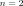
، نسند قيما إلى المدخلة ذات الرتبة بالتعبير
عن
بالتعبير
عن  باستخدام نظام العد ذي الأساس 2 بعدد كلي من الخانات قدره
باستخدام نظام العد ذي الأساس 2 بعدد كلي من الخانات قدره
 ، أي
، أي 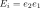
، حيث تمثل الحالة المركبة للعقدتين في
الشبكة،
الحالة المركبة للعقدتين في
الشبكة، 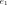
و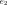
(مثلا تقابل 00 كون العقدتين كلتيهما غير فعالتين)، كما هو مبين في العمود الثاني من الجدول 1. ثم، لكل ، نرمز إلى احتمال حالة الشبكة (
، نرمز إلى احتمال حالة الشبكة (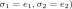
بالرمز ، كما هو مبين في العمود الثالث من الجدول 1. في علم الأعصاب، يمثل المتجه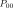
احتمال وجود العصبونين كليهما في حالة سكون، ويمثل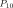
() احتمال كون العصبون الأول (الثاني) في الحالة الفعالة والعصبون الثاني (الأول) في حالة صمت، ويمثل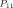
احتمال كون العصبونين كليهما في الحالة الفعالة. وترتب المدخلات في المتجه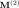
بصورة مماثلة، أي إن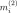
هو توقع ، كما هو مبين في العمود الرابع من الجدول 1.| i | |||
|---|---|---|---|
| 1 | 00 | 1 | |
| 2 | 01 | ||
| 3 | 10 | ||
| 4 | 11 |
 و
لشبكة مثالية مكونة من
و
لشبكة مثالية مكونة من  عقد.
عقد.للتوضيح، نبين أنه لشبكة تضم  عقد توجد مصفوفة كاملة الرتبة،
عقد توجد مصفوفة كاملة الرتبة،
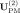
، تحول من التوزيع الاحتمالي إلى العزوم. فمن المعادلتين (1) و(2)، يمكن الحصول على توقعات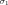
و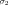
و بجمع
الاحتمالات التي تكون فيها تلك العقد فعالة، مما يؤدي إلى النظام الآتي
بجمع
الاحتمالات التي تكون فيها تلك العقد فعالة، مما يؤدي إلى النظام الآتي
| (5) |
أي
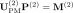
. ومن الواضح من المعادلة (5) أن مصفوفة مثلثية علوية وكاملة
الرتبة.
مصفوفة مثلثية علوية وكاملة
الرتبة.
يمكن توسيع التحليل أعلاه إلى شبكة بأي حجم  . فلكل عدد صحيح
. فلكل عدد صحيح
 ،
،  ، يمكننا بالمثل التعبير عن
، يمكننا بالمثل التعبير عن  بنظام العد ذي الأساس
2 بعدد خانات قدره
بنظام العد ذي الأساس
2 بعدد خانات قدره  ، ويرمز إليه بـ . ثم نكتب احتمال
حالة الشبكة (، ويرمز إليه بـ
، ويرمز إليه بـ . ثم نكتب احتمال
حالة الشبكة (، ويرمز إليه بـ
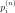
، والعزم، أي توقع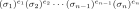
، ويرمز إليه بـ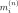
، كما يأتي| (6) |
نبرهن أن هناك مصفوفة كاملة الرتبة،  ، تحول من
، تحول من  إلى
إلى
 كما يأتي
كما يأتي
 |
(7) |
حيث تكون  مثلثية علوية وكاملة الرتبة (انظر الملحق C
للتفاصيل).
مثلثية علوية وكاملة الرتبة (انظر الملحق C
للتفاصيل).
لذلك يمكن استعمال جميع العزوم، المبينة في مدخلات  ، لوصف
التوزيع الاحتمالي لحالات الشبكة لشبكة تضم
، لوصف
التوزيع الاحتمالي لحالات الشبكة لشبكة تضم  عقدا ذات ديناميات
ثنائية. وبما أن توزيع MEP كامل الرتبة،
عقدا ذات ديناميات
ثنائية. وبما أن توزيع MEP كامل الرتبة،  ، يخضع لجميع العزوم،
فإن
، يخضع لجميع العزوم،
فإن  و
و يشتركان في العزوم نفسها لتسجيل طويل الزمن بما
يكفي، أي
يشتركان في العزوم نفسها لتسجيل طويل الزمن بما
يكفي، أي  في المعادلة (7). وبما أن
في المعادلة (7). وبما أن
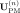
كاملة الرتبة، فإن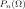
مطابقة لـ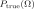
.وبالتعويض المباشر عن  في تحليل MEP كامل الرتبة، نطور علاقة
بين التآثرات الفعالة والتوزيع الاحتمالي، كما يناقش في القسم التالي.
في تحليل MEP كامل الرتبة، نطور علاقة
بين التآثرات الفعالة والتوزيع الاحتمالي، كما يناقش في القسم التالي.
تطبيق واحد لواحد بين التآثرات الفعالة والتوزيع الاحتمالي
لإيضاح العلاقة بين التآثرات الفعالة والتوزيع الاحتمالي الحقيقي لحالات
الشبكة، نعوض جميع الحالات البالغ عددها  لـ
لـ
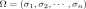
والتوزيع الاحتمالي، ، في المعادلة (4) مع
، في المعادلة (4) مع 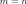
، ثم نأخذ لوغاريتم طرفيها. وينتج من ذلك نظام معادلات خطية بدلالة وجميع التآثرات الفعالة، |
(8) |
حيث يمكن اعتبار  تآثرا فعالا من الرتبة الصفرية،
تآثرا فعالا من الرتبة الصفرية،  . وبحل
نظام المعادلات الخطية في المعادلة (8)، يمكننا الحصول على جميع
التآثرات الفعالة البالغ عددها
. وبحل
نظام المعادلات الخطية في المعادلة (8)، يمكننا الحصول على جميع
التآثرات الفعالة البالغ عددها  ، أي قيم
، أي قيم  ، بدلالة التوزيع
الاحتمالي الحقيقي لحالات الشبكة،
، بدلالة التوزيع
الاحتمالي الحقيقي لحالات الشبكة،  .
.
نعود مرة أخرى إلى حالة الشبكة الصغيرة ذات  عقد لتوضيح كيفية
الحصول على تطبيق واحد لواحد من النظام الخطي الموصوف بالمعادلة
(8). أولا، نرمز إلى المتجه
عقد لتوضيح كيفية
الحصول على تطبيق واحد لواحد من النظام الخطي الموصوف بالمعادلة
(8). أولا، نرمز إلى المتجه  بوصفه المتجه الذي يحتوي جميع
التآثرات الفعالة، مع فهرس كل تآثر فعال،
بوصفه المتجه الذي يحتوي جميع
التآثرات الفعالة، مع فهرس كل تآثر فعال،  . ثم نعبر عن
بنظام العد ذي الأساس 2 بعدد كلي من الخانات قدره
. ثم نعبر عن
بنظام العد ذي الأساس 2 بعدد كلي من الخانات قدره  ، ويرمز إليه
بـ
، ويرمز إليه
بـ  ، وتكون المدخلة ذات الرتبة
، وتكون المدخلة ذات الرتبة  من
من  هي معامل الحد
هي معامل الحد
 في المعادلة (8)، مما يعطي . وبما أن ترتيب
الفهارس لـ هو نفسه ترتيبها لـ ، فإن الطرف الأيمن من
المعادلة (8) هو ببساطة لوغاريتم المتجه
في المعادلة (8)، مما يعطي . وبما أن ترتيب
الفهارس لـ هو نفسه ترتيبها لـ ، فإن الطرف الأيمن من
المعادلة (8) هو ببساطة لوغاريتم المتجه  . لذلك، لشبكة
ذات
. لذلك، لشبكة
ذات  عقد، تكون لدينا المعادلة الآتية
عقد، تكون لدينا المعادلة الآتية
| (9) |
يمكن توسيع العلاقة أعلاه إلى شبكة بأي حجم  وتكون المعادلات
الخطية المقابلة كما يأتي
وتكون المعادلات
الخطية المقابلة كما يأتي
| (10) |
حيث تكون  مصفوفة مثلثية سفلية ذات بعد . ومن أجل
، يمكننا بالمثل التعبير عن
مصفوفة مثلثية سفلية ذات بعد . ومن أجل
، يمكننا بالمثل التعبير عن  بنظام العد ذي الأساس 2 بعدد
خانات قدره
بنظام العد ذي الأساس 2 بعدد
خانات قدره  ، ويرمز إليه بـ
، ويرمز إليه بـ  . ثم تكون المدخلة ذات الرتبة
. ثم تكون المدخلة ذات الرتبة
 من
من  هي معامل الحد
هي معامل الحد  في المعادلة (8).
ولإظهار أن التحويل الخطي بين التآثرات الفعالة في توزيع MEP كامل الرتبة
والتوزيع الاحتمالي لحالات الشبكة
في المعادلة (8).
ولإظهار أن التحويل الخطي بين التآثرات الفعالة في توزيع MEP كامل الرتبة
والتوزيع الاحتمالي لحالات الشبكة  هو تطبيق واحد لواحد،
يلزم إثبات أن
هو تطبيق واحد لواحد،
يلزم إثبات أن  مصفوفة كاملة الرتبة. وبطريقة مماثلة لبرهان
التطبيق الواحد لواحد بين التوزيع الاحتمالي والعزوم، نستطيع أن نبين أن
مصفوفة كاملة الرتبة. وبطريقة مماثلة لبرهان
التطبيق الواحد لواحد بين التوزيع الاحتمالي والعزوم، نستطيع أن نبين أن
 هي منقول
هي منقول  ، أي ،
بالاستقراء الرياضي. لذلك فإن
، أي ،
بالاستقراء الرياضي. لذلك فإن  مثلثية سفلية وكاملة الرتبة، ويمكن
استعمال التآثرات الفعالة لتوصيف التوزيع الاحتمالي لحالات الشبكة في
شبكة من عقد ذات ديناميات ثنائية.
مثلثية سفلية وكاملة الرتبة، ويمكن
استعمال التآثرات الفعالة لتوصيف التوزيع الاحتمالي لحالات الشبكة في
شبكة من عقد ذات ديناميات ثنائية.
التآثرات الفعالة عالية الرتبة صغيرة في الشبكات غير المتزامنة
باستخدام التطبيق بين التوزيع الاحتمالي والتآثرات الفعالة، نبين أن هناك
علاقة عودية بين الرتب المختلفة للتآثرات الفعالة، حيث تكون التآثرات
الفعالة عالية الرتبة ضعيفة مقارنة بمنخفضة الرتبة في الشبكات غير
المتزامنة. وللتوضيح، نناقش أولا حالة شبكة حجمها  . استنادا إلى
المعادلة (9)، لدينا
. استنادا إلى
المعادلة (9)، لدينا
و
بعد ذلك نعرف حدا جديدا
يصف الحالة التي تتغير فيها حالة العقدة الثانية في الشبكة من غير فعالة
(الحالة  ) إلى فعالة (الحالة
) إلى فعالة (الحالة  ) (أي إن في
و). لاحظ أنه مع هذا الترميز نستطيع الآن التعبير عن التآثر
الفعال الأعلى رتبة،
) (أي إن في
و). لاحظ أنه مع هذا الترميز نستطيع الآن التعبير عن التآثر
الفعال الأعلى رتبة،  ، كما يأتي
، كما يأتي
لشبكة بأي حجم  ، واستنادا إلى المعادلة (10)، نحصل على تعبير
للتآثر الفعال من الرتبة الأولى
، واستنادا إلى المعادلة (10)، نحصل على تعبير
للتآثر الفعال من الرتبة الأولى
| (11) |
وللتآثر الفعال من الرتبة الثانية
| (12) |
ثم يمكن الحصول على التآثر الفعال من الرتبة الثانية، ، بصورة
مكافئة بالإجراء الآتي: أولا، في نبدل حالة العقدة الثانية من
0 إلى 1 للحصول على حد جديد . ثم لاحظ أننا إذا
طرحنا  من نصل إلى
من نصل إلى  كما هو موصوف في المعادلة
(12). ويمكن توسيع الترميز أعلاه إلى حالة التآثرات الفعالة عالية
الرتبة (انظر الملحق D للبرهان):
كما هو موصوف في المعادلة
(12). ويمكن توسيع الترميز أعلاه إلى حالة التآثرات الفعالة عالية
الرتبة (انظر الملحق D للبرهان):
 |
(13) |
حيث يحصل على و بتبديل حالة العقدة ذات الرتبة
بتبديل حالة العقدة ذات الرتبة  في
من 0 إلى 1. بعد ذلك نشرح حدسيا أن البنية العودية
(المعادلة (13)) تؤدي إلى تراتب في التآثرات الفعالة، أي إن
التآثرات الفعالة عالية الرتبة أصغر بكثير من منخفضة الرتبة في الشبكات
غير المتزامنة. يصف
في
من 0 إلى 1. بعد ذلك نشرح حدسيا أن البنية العودية
(المعادلة (13)) تؤدي إلى تراتب في التآثرات الفعالة، أي إن
التآثرات الفعالة عالية الرتبة أصغر بكثير من منخفضة الرتبة في الشبكات
غير المتزامنة. يصف  التآثر الفعال للشبكة الفرعية من العصبونات
عندما تكون حالة العصبون ذي الرتبة
التآثر الفعال للشبكة الفرعية من العصبونات
عندما تكون حالة العصبون ذي الرتبة  وحالات العصبونات ذات
الفهارس غير فعالة. أما الحد
وحالات العصبونات ذات
الفهارس غير فعالة. أما الحد  فيصف الحالة التي يصبح فيها
العصبون ذو الرتبة
فيصف الحالة التي يصبح فيها
العصبون ذو الرتبة  فعالا ولا تتغير حالات جميع العصبونات الأخرى.
وفي الشبكة غير المتزامنة تكون التآثرات القشرية بين العصبونات ضعيفة
نسبيا، ولذلك ينبغي أن يكون أثر تغير ديناميات الشبكة من الحالة التي يكون
فيها العصبون ذو الرتبة
فعالا ولا تتغير حالات جميع العصبونات الأخرى.
وفي الشبكة غير المتزامنة تكون التآثرات القشرية بين العصبونات ضعيفة
نسبيا، ولذلك ينبغي أن يكون أثر تغير ديناميات الشبكة من الحالة التي يكون
فيها العصبون ذو الرتبة  صامتا إلى الحالة التي يكون فيها العصبون
ذو الرتبة فعالا صغيرا. وبعبارة أخرى، ينبغي أن يكون فرق القيمة
بين التآثر الفعال للشبكة الفرعية عندما يكون العصبون ذو الرتبة
صامتا إلى الحالة التي يكون فيها العصبون
ذو الرتبة فعالا صغيرا. وبعبارة أخرى، ينبغي أن يكون فرق القيمة
بين التآثر الفعال للشبكة الفرعية عندما يكون العصبون ذو الرتبة  غير فعال،
غير فعال،  ، والتآثر الفعال عندما يكون العصبون ذو الرتبة
، والتآثر الفعال عندما يكون العصبون ذو الرتبة
 فعالا،
فعالا،  ، صغيرا، ومن ثم يكون التآثر الفعال الأعلى رتبة،
، أصغر بكثير من التآثر الفعال منخفض الرتبة،
، صغيرا، ومن ثم يكون التآثر الفعال الأعلى رتبة،
، أصغر بكثير من التآثر الفعال منخفض الرتبة،  .
لاحظ أن برهانا رياضيا أدق لتراتب التآثرات الفعالة في شبكة غير متزامنة
يمكن الاطلاع عليه في عملنا السابق xu2016dynamical . لذلك تؤدي العلاقة العودية
في المعادلة (13) إلى تراتب للتآثرات الفعالة، أي إن التآثرات
الفعالة منخفضة الرتبة تهيمن على التآثرات الفعالة الأعلى رتبة في تحليل
MEP.
.
لاحظ أن برهانا رياضيا أدق لتراتب التآثرات الفعالة في شبكة غير متزامنة
يمكن الاطلاع عليه في عملنا السابق xu2016dynamical . لذلك تؤدي العلاقة العودية
في المعادلة (13) إلى تراتب للتآثرات الفعالة، أي إن التآثرات
الفعالة منخفضة الرتبة تهيمن على التآثرات الفعالة الأعلى رتبة في تحليل
MEP.
بعد ذلك ندرس ديناميات شبكة HH العصبونية للتأكد من أن التآثرات الفعالة
لأول رتبتين في توزيع MEP كامل الرتبة تهيمن على التآثرات الفعالة الأعلى
رتبة. نطور شبكات HH في محاكاة طويلة الزمن قدرها ونقيس
التوزيع الاحتمالي لحالات الشبكة. وقد تحققنا من أن ديناميات شبكة HH في
زمن محاكاة طويل كهذا تصل إلى الحالة المستقرة، لذلك يمكن للتوزيع
الاحتمالي المقيس لحالات الشبكة أن يمثل جيدا التوزيع الاحتمالي الحقيقي
لحالات الشبكة. ثم نحسب التآثرات الفعالة في توزيع MEP كامل الرتبة بواسطة
المعادلة (10) من التوزيع الاحتمالي المقيس لحالات الشبكة. في
الشكل 3، تحسب القوة المتوسطة للتآثرات الفعالة من الرتبة
 كمتوسط القيمة المطلقة للتآثرات الفعالة من الرتبة
كمتوسط القيمة المطلقة للتآثرات الفعالة من الرتبة  . ويمكن
أن يرى بوضوح أنه في النظم الدينامية الثلاثة المختلفة، تكون القوة
المتوسطة للتآثرات الفعالة ذات الرتب العالية (
. ويمكن
أن يرى بوضوح أنه في النظم الدينامية الثلاثة المختلفة، تكون القوة
المتوسطة للتآثرات الفعالة ذات الرتب العالية ( ) أصغر بمرتبة
مقدار واحدة على الأقل (بالقيمة المطلقة) من قوة التآثرات الفعالة من
الرتبتين الأولى والثانية.
) أصغر بمرتبة
مقدار واحدة على الأقل (بالقيمة المطلقة) من قوة التآثرات الفعالة من
الرتبتين الأولى والثانية.
 ، في كل
حالة) في الشكل 1، على الترتيب، مع زمن تسجيل طويل قدره
.
، في كل
حالة) في الشكل 1، على الترتيب، مع زمن تسجيل طويل قدره
. تحليل MEP منخفض الرتبة مع التسجيلات قصيرة الزمن
باستخدام التطبيقات الموصوفة في الأقسام السابقة، نبين أن تحليل MEP منخفض الرتبة يمكن أن يوفر تقديرا دقيقا للتوزيع الاحتمالي لحالات الشبكة مع تسجيل قصير الزمن.
أولا، لاحظ أنه في تسجيل قصير لشبكة غير متزامنة، يكون احتمال رصد حالة
عالية النشاط (أي حالة تكون فيها عقد كثيرة فعالة في الوقت نفسه) صغيرا
عادة إلى درجة لا تسمح بقياسه بدقة. لذلك لا يستطيع التوزيع الاحتمالي
لحالات الشبكة المقيس من التسجيل قصير الزمن التقاط كثير من حالات نشاط
الشبكة كما ترصد في التسجيلات طويلة الزمن (مثلا كما هو مبين في الشكل
2). لاحظ أن التطبيق بين التوزيع الاحتمالي والتآثرات الفعالة، أي
المصفوفة المثلثية السفلية  ، يشير إلى أن احتمال حالة عالية
النشاط يتكون من مجموع عدد كبير من التآثرات الفعالة. فعلى سبيل المثال،
في شبكة صغيرة تضم
، يشير إلى أن احتمال حالة عالية
النشاط يتكون من مجموع عدد كبير من التآثرات الفعالة. فعلى سبيل المثال،
في شبكة صغيرة تضم  عقد، يمكن الحصول على احتمال الحالة عالية النشاط،
، من المعادلة (9) كما يأتي: . لذلك، للحصول
على تقدير دقيق لهذه الحالات عالية النشاط، من المهم الحصول على تقدير
دقيق لمجموع التآثرات الفعالة.
عقد، يمكن الحصول على احتمال الحالة عالية النشاط،
، من المعادلة (9) كما يأتي: . لذلك، للحصول
على تقدير دقيق لهذه الحالات عالية النشاط، من المهم الحصول على تقدير
دقيق لمجموع التآثرات الفعالة.
وبالنسبة إلى الشبكات غير المتزامنة، بما أن التآثرات الفعالة عالية
الرتبة صغيرة (مثلا كما هو مبين في الشكل 3)، فإن المجموع في احتمال
حالة عالية النشاط سيكون محكوما بالتآثرات الفعالة منخفضة الرتبة. لاحظ أن
التآثرات الفعالة منخفضة الرتبة يمكن اشتقاقها من العزوم منخفضة الرتبة من
خلال خوارزمية تحجيم تكرارية (انظر الملحق A للتفاصيل) في تحليل
MEP، ومن ثم فإن تقديرا دقيقا للعزوم منخفضة الرتبة أمر أساسي. ويبين
التطبيق بين التوزيع الاحتمالي لحالات الشبكة والعزوم المقابلة للشبكة، أي
المصفوفة المثلثية العلوية  (المعادلة (5))، أن العزوم
منخفضة الرتبة تتكون من مجموع احتمالات عدد كبير من حالات نشاط الشبكة.
فمثلا، في شبكة من
(المعادلة (5))، أن العزوم
منخفضة الرتبة تتكون من مجموع احتمالات عدد كبير من حالات نشاط الشبكة.
فمثلا، في شبكة من  عقد، يكون عزم الرتبة الأولى للعقدة
1 هو مجموع احتمالات حالات الشبكة التي تكون فيها العقدة 1 فعالة
(بعدد إجمالي قدره من الحالات، من الحالات منخفضة النشاط إلى
الحالات عالية النشاط)، أي
.
لاحظ أن الحالات منخفضة النشاط تحدث كثيرا في شبكة غير متزامنة؛ لذلك
تهيمن احتمالات هذه الحالات منخفضة النشاط على المجموع في العزوم منخفضة
الرتبة، ويمكن قياسها بدقة من تسجيل قصير الزمن، مما يؤدي إلى تقدير جيد
للعزوم منخفضة الرتبة. إضافة إلى ذلك، نشير إلى أن خطأ التقدير في العزوم
منخفضة الرتبة يمكن أن ينخفض أكثر بفعل المجاميع الخطية. لذلك يمكن تقدير
العزوم منخفضة الرتبة بدقة وإجراء تحليل MEP منخفض الرتبة في تسجيل بيانات
قصير الزمن لديناميات الشبكة. ومن المتوقع أن يوفر توزيع MEP منخفض الرتبة
تقديرا جيدا للتوزيع الاحتمالي لحالات الشبكة.
عقد، يكون عزم الرتبة الأولى للعقدة
1 هو مجموع احتمالات حالات الشبكة التي تكون فيها العقدة 1 فعالة
(بعدد إجمالي قدره من الحالات، من الحالات منخفضة النشاط إلى
الحالات عالية النشاط)، أي
.
لاحظ أن الحالات منخفضة النشاط تحدث كثيرا في شبكة غير متزامنة؛ لذلك
تهيمن احتمالات هذه الحالات منخفضة النشاط على المجموع في العزوم منخفضة
الرتبة، ويمكن قياسها بدقة من تسجيل قصير الزمن، مما يؤدي إلى تقدير جيد
للعزوم منخفضة الرتبة. إضافة إلى ذلك، نشير إلى أن خطأ التقدير في العزوم
منخفضة الرتبة يمكن أن ينخفض أكثر بفعل المجاميع الخطية. لذلك يمكن تقدير
العزوم منخفضة الرتبة بدقة وإجراء تحليل MEP منخفض الرتبة في تسجيل بيانات
قصير الزمن لديناميات الشبكة. ومن المتوقع أن يوفر توزيع MEP منخفض الرتبة
تقديرا جيدا للتوزيع الاحتمالي لحالات الشبكة.
وباختصار، يمكن الحصول على توزيع MEP منخفض الرتبة بالإجراء الآتي: أولا،
حساب العزوم منخفضة الرتبة من التسجيل التجريبي قصير الزمن باستخدام
المعادلتين (1) و(2) لعزمي الرتبتين الأولى والثانية، على
الترتيب. ثانيا، يجرى تحليل MEP منخفض الرتبة (مع قيود العزوم منخفضة
الرتبة) باستخدام خوارزمية التحجيم التكرارية (انظر الملحق A
للتفاصيل) لاشتقاق التآثرات الفعالة منخفضة الرتبة مع جعل جميع التآثرات
الفعالة الأعلى رتبة مساوية للصفر. وهذا يحدد  في المعادلة
(10)، باستثناء
في المعادلة
(10)، باستثناء  . ثالثا، يعبر عن التوزيع الاحتمالي،
. ثالثا، يعبر عن التوزيع الاحتمالي،
 ، كدالة في باستخدام المعادلة (10). وأخيرا، يحدد
، كدالة في باستخدام المعادلة (10). وأخيرا، يحدد
 بفرض أن مجموع جميع الاحتمالات يساوي واحدا. وما إن تحدد كل
التآثرات الفعالة منخفضة الرتبة، تستعمل المعادلة (4) لتحديد
توزيع MEP منخفض الرتبة؛ فمثلا يمثل و توزيعي MEP من
الرتبتين الأولى والثانية، على الترتيب.
بفرض أن مجموع جميع الاحتمالات يساوي واحدا. وما إن تحدد كل
التآثرات الفعالة منخفضة الرتبة، تستعمل المعادلة (4) لتحديد
توزيع MEP منخفض الرتبة؛ فمثلا يمثل و توزيعي MEP من
الرتبتين الأولى والثانية، على الترتيب.
التحقق من تحليل MEP مع التسجيلات قصيرة الزمن بواسطة نموذج شبكة HH العصبونية
في هذا القسم، نستعمل بيانات من نموذج شبكة HH العصبونية للتحقق من أن تحليل MEP منخفض الرتبة يمكن أن يقدر بدقة التوزيع الاحتمالي لحالات الشبكة من تسجيلات قصيرة الزمن باستخدام الإجراء الموصوف في القسم السابق.
نطور أولا نموذج شبكة HH العصبونية بزمن محاكاة قصير قدره ونسجل
قطارات الشوكات للشبكة. ثم نقدر عزمي الرتبتين الأولى والثانية من هذا
التسجيل القصير، ونستعمل هذين العزمين لتقدير توزيعي MEP من الرتبتين
الأولى والثانية كليهما (المعادلة (4)). وأخيرا، نقارن توزيعات MEP
بالتوزيع الاحتمالي لحالات الشبكة المقيس من التسجيل الطويل البالغ
. وكما هو مبين في الشكل 4، ففي النظم الدينامية الثلاثة
كلها ينحرف التوزيع الاحتمالي لتحليل MEP من الرتبة الأولى،  (الأخضر)، انحرافا كبيرا عن التوزيع الاحتمالي المقيس لحالات الشبكة في
التسجيل الطويل. أما التوزيع الاحتمالي لتحليل MEP من الرتبة الثانية،
(الأخضر)، انحرافا كبيرا عن التوزيع الاحتمالي المقيس لحالات الشبكة في
التسجيل الطويل. أما التوزيع الاحتمالي لتحليل MEP من الرتبة الثانية،
 (الأزرق)، فيتفق اتفاقا ممتازا مع التوزيع الاحتمالي المقيس
لحالات الشبكة في التسجيل الطويل. وتشير هذه النتائج إلى أن تحليل MEP
منخفض الرتبة، أي من الرتبة الثانية، يوفر طريقة كفؤة للحصول على التوزيع
الاحتمالي لحالات الشبكة من تسجيلات قصيرة.
(الأزرق)، فيتفق اتفاقا ممتازا مع التوزيع الاحتمالي المقيس
لحالات الشبكة في التسجيل الطويل. وتشير هذه النتائج إلى أن تحليل MEP
منخفض الرتبة، أي من الرتبة الثانية، يوفر طريقة كفؤة للحصول على التوزيع
الاحتمالي لحالات الشبكة من تسجيلات قصيرة.
 ، في كل حالة) في الشكل 1، على الترتيب. وهنا يجرى
تحليل MEP باستخدام تسجيل قصير ().
، في كل حالة) في الشكل 1، على الترتيب. وهنا يجرى
تحليل MEP باستخدام تسجيل قصير ().
التحقق من تحليل MEP مع التسجيلات قصيرة الزمن بواسطة التجارب الفيزيولوجية الكهربائية
عموما، يصعب الحصول على تسجيل طويل الزمن مستقر لقطارات الشوكات من دماغ
حيوان يقظ داخل الجسم الحي. وللتحقق من صلاحية تحليل MEP على
التسجيلات القصيرة، نستعمل البيانات التجريبية الفيزيولوجية الكهربائية
المسجلة بمصفوفة متعددة الأقطاب من V1 في قرود macaque مخدرة عبر
محاولات متعددة. في كل محاولة، عرض محفز صوري على الشاشة لمدة
، وتلاه عرض شاشة رمادية منتظمة لمدة coen2015flexible ; Kohn2015Multi . يبلغ عدد الصور
المختلفة 956 إجمالا، وتعرض الصور بترتيب شبه عشوائي مع عرض كل صورة
 مرة. ويمكن العثور على التفاصيل التجريبية في الملحق E. هنا نركز
على مسألة ما إذا كان تحليل MEP من الرتبة الثانية انطلاقا من تسجيل قصير
يستطيع أن يقدر بدقة التوزيع الاحتمالي لأنماط الإطلاق العصبوني في تسجيل
طويل. لاحظ أن مدة عرض كل صورة لا تتجاوز ، وهي مدة قصيرة جدا
لا تسمح لقطارات الشوكات المسجلة بأن تمتلك توزيعا احتماليا مستقرا. وكبديل،
نجمع قطارات الشوكات المسجلة أثناء الشاشة الرمادية المنتظمة ( في كل
محاولة) معا للحصول على تسجيل طويل قدره . وقد تحققنا من أن
قطارات الشوكات في مثل هذا التسجيل الطويل لها توزيع احتمالي مستقر. ومن
أجل التسجيل القصير، نختار عشوائيا مقطعا طوله
مرة. ويمكن العثور على التفاصيل التجريبية في الملحق E. هنا نركز
على مسألة ما إذا كان تحليل MEP من الرتبة الثانية انطلاقا من تسجيل قصير
يستطيع أن يقدر بدقة التوزيع الاحتمالي لأنماط الإطلاق العصبوني في تسجيل
طويل. لاحظ أن مدة عرض كل صورة لا تتجاوز ، وهي مدة قصيرة جدا
لا تسمح لقطارات الشوكات المسجلة بأن تمتلك توزيعا احتماليا مستقرا. وكبديل،
نجمع قطارات الشوكات المسجلة أثناء الشاشة الرمادية المنتظمة ( في كل
محاولة) معا للحصول على تسجيل طويل قدره . وقد تحققنا من أن
قطارات الشوكات في مثل هذا التسجيل الطويل لها توزيع احتمالي مستقر. ومن
أجل التسجيل القصير، نختار عشوائيا مقطعا طوله  من التسجيل الطويل،
أي ، وتحققنا أيضا من أن التوزيع الاحتمالي في هذا التسجيل القصير
مختلف تماما عن نظيره في التسجيل الطويل. ولإجراء تحليل MEP، اخترنا
عشوائيا بيانات قطار الشوكات لثمانية عصبونات من القياسات التجريبية.
من التسجيل الطويل،
أي ، وتحققنا أيضا من أن التوزيع الاحتمالي في هذا التسجيل القصير
مختلف تماما عن نظيره في التسجيل الطويل. ولإجراء تحليل MEP، اخترنا
عشوائيا بيانات قطار الشوكات لثمانية عصبونات من القياسات التجريبية.
كما هو مبين في الشكل 5a، تكون هذه العصبونات الثمانية في حالة
غير متزامنة. ثم نحسب التآثرات الفعالة في توزيع MEP كامل الرتبة بواسطة
المعادلة (10) باستخدام التوزيع الاحتمالي المقيس لحالات الشبكة من
التسجيل الطويل البالغ . في الشكل 5b، تحسب القوة المتوسطة
للتآثرات الفعالة من الرتبة  كمتوسط القيمة المطلقة للتآثرات
الفعالة من الرتبة
كمتوسط القيمة المطلقة للتآثرات
الفعالة من الرتبة  . ويمكن أن يرى بوضوح أن القوة المتوسطة
للتآثرات الفعالة ذات الرتب العالية () أصغر بما يقارب مرتبة
مقدار واحدة (بالقيمة المطلقة) من قوة التآثرات الفعالة من الرتبتين
الأولى والثانية. بعد ذلك ننظر في تسجيل قصير قدره ونقدر عزمي
الرتبتين الأولى والثانية من هذا التسجيل القصير، ونستعمل هذه العزوم
لتقدير توزيعات MEP من الرتبة الثانية (المعادلة (4)). وكما هو مبين
في الشكل 5c، فإن التوزيع الاحتمالي المقدر بتحليل MEP من الرتبة
الثانية يتفق اتفاقا ممتازا مع التوزيع الاحتمالي المقيس لحالات الشبكة في
التسجيل الطويل. غير أن التوزيع الاحتمالي المقيس في التسجيل القصير ينحرف
بوضوح عن التوزيع الاحتمالي المقيس في التسجيل الطويل.
. ويمكن أن يرى بوضوح أن القوة المتوسطة
للتآثرات الفعالة ذات الرتب العالية () أصغر بما يقارب مرتبة
مقدار واحدة (بالقيمة المطلقة) من قوة التآثرات الفعالة من الرتبتين
الأولى والثانية. بعد ذلك ننظر في تسجيل قصير قدره ونقدر عزمي
الرتبتين الأولى والثانية من هذا التسجيل القصير، ونستعمل هذه العزوم
لتقدير توزيعات MEP من الرتبة الثانية (المعادلة (4)). وكما هو مبين
في الشكل 5c، فإن التوزيع الاحتمالي المقدر بتحليل MEP من الرتبة
الثانية يتفق اتفاقا ممتازا مع التوزيع الاحتمالي المقيس لحالات الشبكة في
التسجيل الطويل. غير أن التوزيع الاحتمالي المقيس في التسجيل القصير ينحرف
بوضوح عن التوزيع الاحتمالي المقيس في التسجيل الطويل.
 (الأزرق)، مقابل التواتر المقيس من
التسجيل الطويل البالغ .
(الأزرق)، مقابل التواتر المقيس من
التسجيل الطويل البالغ .
المناقشة
استعمل تحليل MEP من الرتبة الثانية لاستنتاج التوزيع الاحتمالي لحالات الشبكة في ظل شروط متنوعة، مثل النشاط التلقائي للشبكات العصبونية shlens2006structure ; tang2008maximum أو الدخل البصري schneidman2006weak . وبما أن توزيع MEP من الرتبة الثانية يمكن الحصول عليه بتعظيم إنتروبيا Shannon مع قيود مقيسة لا تشمل إلا عزوم الرتبتين الأولى والثانية، فإن لعنة الأبعاد تتجاوز ويوفر تقدير دقيق للتوزيع الاحتمالي لحالات الشبكة. وقد بدأت سلسلة من الأعمال لمعالجة جوانب متنوعة من هذا النهج، بما في ذلك استكشاف خوارزميات سريعة nasser2013spatio ; broderick2007faster ، واستنتاج الارتباطات المكانية الزمانية tang2008maximum ; shlens2008synchronized ; marre2009prediction ; yeh2010maximum ; nasser2014parameter ، وتوصيف الاتصال الوظيفي للشبكة yu2008small ; roudi2009ising ; hertz2011ising ; watanabe2013pairwise ; barton2013ising ; dunn2015correlations .
إضافة إلى الشبكات العصبونية الشوكية schneidman2006weak ، طبق تحليل MEP على تحليل أنواع مختلفة من البيانات الثنائية. وتشمل هذه التطبيقات، على سبيل المثال، بيانات التصوير بالرنين المغناطيسي الوظيفي watanabe2013pairwise ، حيث تعد كل منطقة دماغية إما فعالة أو صامتة، وبيانات سوق الأسهم bury2012statistical ، حيث يعد سعر كل سهم إما في ارتفاع أو غير ذلك. غير أن التسجيلات طويلة الزمن غالبا ما تكون غير عملية الحصول في كل هذه البيانات الثنائية.
في هذا العمل، نبدأ بإظهار وجود تحويلات خطية قابلة للعكس بين التوزيع الاحتمالي لحالات الشبكة والعزوم والتآثرات الفعالة في تحليل MEP لشبكة عامة من عقد ذات ديناميات ثنائية. واستنادا إلى هذه التحويلات، نبين أن تحليل MEP من الرتبة الثانية يعطي تقديرا دقيقا للتوزيع الاحتمالي لحالات الشبكة مع تسجيل قصير الزمن. وأخيرا، وباستخدام بيانات من نموذج شبكة HH العصبونية المحاكى ومن التجربة الفيزيولوجية الكهربائية معا، نبرهن الأداء الجيد لتحليل MEP من الرتبة الثانية مع التسجيلات القصيرة. لذلك يمكن أن تتحسن قابلية تطبيق تحليل MEP من الرتبة الثانية في الحالات العملية تحسنا ملحوظا.
وأخيرا نشير إلى أن هناك أيضا بعض القيود على تحليل MEP منخفض الرتبة.
أولا، غالبا ما يكون تحليل MEP منخفض الرتبة غير كاف لإعادة بناء التوزيع
الاحتمالي لحالات الشبكة بدقة في الشبكات المتزامنة، لأن التآثرات الفعالة
عالية الرتبة في مثل هذه الحالات لا تكون صغيرة غالبا xu2016dynamical . ثانيا،
كلما ازدادت رتبة قيود العزوم وحجم الشبكة،  ، صارت الخوارزميات
الموجودة لتقدير التآثرات الفعالة في شبكة كبيرة بطيئة جدا shlens2009structure ; nasser2013spatio .
ونظرا إلى أن عدد جميع حالات الشبكة، أي
، صارت الخوارزميات
الموجودة لتقدير التآثرات الفعالة في شبكة كبيرة بطيئة جدا shlens2009structure ; nasser2013spatio .
ونظرا إلى أن عدد جميع حالات الشبكة، أي  ، يكون كبيرا جدا عندما
يكون عددا كبيرا، فإن الخوارزميات الموجودة تقدر عزوم توزيع MEP
باستخدام أخذ عينات Monte Carlo أو متحوراته من توزيع MEP، وهي غالبا
بطيئة جدا عندما يكون بعد التوزيع عاليا shlens2009structure ; nasser2013spatio . لذلك تبقى كيفية توصيف
الخصائص الإحصائية لديناميات الشبكات شديدة الترابط، مثل الشبكات شبه
المتزامنة، بكفاءة، وكيفية تطوير خوارزميات عددية سريعة لتطبيق تحليل MEP
في الشبكات واسعة النطاق، مسألتين مثيرتين للاهتمام ومليئتين بالتحدي
للدراسات المستقبلية.
، يكون كبيرا جدا عندما
يكون عددا كبيرا، فإن الخوارزميات الموجودة تقدر عزوم توزيع MEP
باستخدام أخذ عينات Monte Carlo أو متحوراته من توزيع MEP، وهي غالبا
بطيئة جدا عندما يكون بعد التوزيع عاليا shlens2009structure ; nasser2013spatio . لذلك تبقى كيفية توصيف
الخصائص الإحصائية لديناميات الشبكات شديدة الترابط، مثل الشبكات شبه
المتزامنة، بكفاءة، وكيفية تطوير خوارزميات عددية سريعة لتطبيق تحليل MEP
في الشبكات واسعة النطاق، مسألتين مثيرتين للاهتمام ومليئتين بالتحدي
للدراسات المستقبلية.
Acknowledgements.
دعم هذا العمل من قبل NSFC-11671259 وNSFC-11722107 وNSFC-91630208 وShanghai Rising-Star Program-15QA1402600 (D.Z.)؛ ومن قبل NSF DMS-1009575 وNSFC-31571071 (D.C.)؛ ومن قبل Shanghai 14JC1403800 و15JC1400104، و SJTU-UM Collaborative Research Program (D.C. وD.Z.)؛ ومن قبل NYU Abu Dhabi Institute G1301 (Z.X. وD.Z. وD.C.).Appendix A خوارزمية التحجيم التكرارية
نصف بإيجاز الخوارزمية العددية واسعة الاستعمال لتقدير التآثرات الفعالة
من العزوم. ويمكن العثور على تفاصيل أكثر حول هذه الخوارزمية في المرجع
tang2008maximum . وللتوضيح، نعرض الإجراء للحصول على توزيع MEP من الرتبة
الثانية،  . تهيأ التآثرات كما يأتي:
و،
حيث يدل على التوقع بالنسبة إلى التوزيع الاحتمالي المقيس
لحالات الشبكة في تسجيل البيانات،
. تهيأ التآثرات كما يأتي:
و،
حيث يدل على التوقع بالنسبة إلى التوزيع الاحتمالي المقيس
لحالات الشبكة في تسجيل البيانات،  . ويمكن تحديد القيم المتوقعة
للمتوسطات الفردية
والارتباطات الزوجية
بالنسبة إلى توزيع MEP من الرتبة الثانية
. ويمكن تحديد القيم المتوقعة
للمتوسطات الفردية
والارتباطات الزوجية
بالنسبة إلى توزيع MEP من الرتبة الثانية  بواسطة
بواسطة
حيث إن هي حالة العقدة ذات الرتبة  في حالة الشبكة
. ولتحسين التوافق بين
في حالة الشبكة
. ولتحسين التوافق بين  و
و وبين و، تعدل قيم و بإجراء تكراري:
وبين و، تعدل قيم و بإجراء تكراري:
![\[
J_{i}^{new}=J_{i}^{old}+\alpha\mbox{sign}\left(\left\langle \sigma_{i}\right\rangle _{P(\Omega)}\right)\log\frac{\left\langle \sigma_{i}\right\rangle _{P(\Omega)}}{\left\langle \sigma_{i}\right\rangle _{P_{2}(\Omega)}},
\]](equations/eq_0315.svg) |
![\[
J_{ij}^{new}=J_{ij}^{old}+\alpha\mbox{sign}\left(\left\langle \sigma_{i}\sigma_{j}\right\rangle _{P(\Omega)}\right)\log\frac{\left\langle \sigma_{i}\sigma_{j}\right\rangle _{P(\Omega)}}{\left\langle \sigma_{i}\sigma_{j}\right\rangle _{P_{2}(\Omega)}},
\]](equations/eq_0316.svg) |
حيث يستعمل الثابت  للحفاظ على استقرار التكرار. نستعمل
كما في المرجع tang2008maximum .
للحفاظ على استقرار التكرار. نستعمل
كما في المرجع tang2008maximum .
Appendix B نموذج عصبون Hodgkin-Huxley
يوصف نموذج HH كما يأتي. تخضع ديناميات جهد الغشاء للعصبون ذي الرتبة
 ، ، للعلاقة sun2009library ; sun2010pseudo
، ، للعلاقة sun2009library ; sun2010pseudo
مع
| (14) |
حيث متغير البوابة و
| , | , |
| , | , |
| , | . |
يمثل التيار المداخل إلى العصبون ذي الرتبة  الآتية من
الدفع الخارجي للشبكة، وكذلك التآثرات بين العصبونات في الشبكة،
مع
و،
حيث إن و هما تيارا الدخل الاستثاري والتثبيطي، على
الترتيب، و و هما جهدا الانعكاس المقابلان لهما. وتوصف
ديناميات الناقلية، ، من أجل كما يأتي،
الآتية من
الدفع الخارجي للشبكة، وكذلك التآثرات بين العصبونات في الشبكة،
مع
و،
حيث إن و هما تيارا الدخل الاستثاري والتثبيطي، على
الترتيب، و و هما جهدا الانعكاس المقابلان لهما. وتوصف
ديناميات الناقلية، ، من أجل كما يأتي،
مع
حيث إن هو شدة دخل Poisson الخارجي ذي المعدل
إلى العصبون  مع كون زمن حدث الدخل ذي الرتبة
مع كون زمن حدث الدخل ذي الرتبة
 . نستعمل و و لكل العصبونات في محاكاتنا. يصف
المعامل قوة الاقتران من العصبون قبل المشبكي ذي الرتبة
. نستعمل و و لكل العصبونات في محاكاتنا. يصف
المعامل قوة الاقتران من العصبون قبل المشبكي ذي الرتبة  إلى
العصبون ذي الرتبة
إلى
العصبون ذي الرتبة  ، و هو جهد غشاء العصبون قبل المشبكي
ذي الرتبة . وتصف مصفوفة المجاورة، ، بنية اتصال الشبكة
العصبونية، و، حيث تختار و على شكل
، و هو جهد غشاء العصبون قبل المشبكي
ذي الرتبة . وتصف مصفوفة المجاورة، ، بنية اتصال الشبكة
العصبونية، و، حيث تختار و على شكل  أو
أو
 ، بما يشير إلى نوع العصبون ذي الرتبة
، بما يشير إلى نوع العصبون ذي الرتبة  والعصبون ذي الرتبة
والعصبون ذي الرتبة
 (وتكون واحدا من و و و). وتأخذ القيمة
إذا وجد اقتران موجه من العصبون قبل المشبكي ذي الرتبة
(وتكون واحدا من و و و). وتأخذ القيمة
إذا وجد اقتران موجه من العصبون قبل المشبكي ذي الرتبة  إلى
العصبون بعد المشبكي ذي الرتبة
إلى
العصبون بعد المشبكي ذي الرتبة  ، وتأخذ في غير ذلك.
، وتأخذ في غير ذلك.
في هذه الدراسة، اختيرت قيم المعاملات في معادلات الناقلية أعلاه كما يأتي: ، ، (يضبط جهد الراحة للعصبون على )، ، ، ، وسعة الغشاء ، ، ، ، ، ، و. ونبقي معاملات دخل Poisson ثابتة أثناء كل محاكاة مفردة.
في محاكاتنا العددية، استعملت طريقة Runge-Kutta صريحة من الرتبة الرابعة sun2009library ; sun2010pseudo بخطوة زمنية . واستحصلت بيانات قطار الشوكات بمعدل أخذ عينات عال بما يكفي، مثل .
Appendix C برهان التطبيق الواحد لواحد بين التوزيع الاحتمالي والعزوم
نبرهن وجود مصفوفة كاملة الرتبة  تحول من
تحول من  إلى
إلى  ،
أي
،
أي
| (15) |
لشبكة بأي حجم  . وللتوضيح بشبكة من
. وللتوضيح بشبكة من  عقد، يمكن الحصول على
توقع
عقد، يمكن الحصول على
توقع  و
و و بواسطة
و بواسطة
| (16) |
أي  .
ومن الواضح من المعادلة (16) أن
.
ومن الواضح من المعادلة (16) أن  كاملة الرتبة. نبرهن الآن
النتيجة أعلاه لأي
كاملة الرتبة. نبرهن الآن
النتيجة أعلاه لأي  بالاستقراء الرياضي. افترض أن كاملة
الرتبة. عندئذ يمكن تحليل و إلى جزأين متساويي الطول
، كما يمكن تحليل
بالاستقراء الرياضي. افترض أن كاملة
الرتبة. عندئذ يمكن تحليل و إلى جزأين متساويي الطول
، كما يمكن تحليل  إلى أربع مصفوفات فرعية يكون بعد كل
مصفوفة فرعية منها كما يأتي:
إلى أربع مصفوفات فرعية يكون بعد كل
مصفوفة فرعية منها كما يأتي:
حيث
إن تعبير  هو نفسه تعبير
هو نفسه تعبير  في المعادلة (6)، أي
، ويمكن التعبير عن كما يأتي،
في المعادلة (6)، أي
، ويمكن التعبير عن كما يأتي،
في تمثيل نظام العد ذي الأساس 2 بعدد خانات قدره  ، تكون الخانة
الأولى في تمثيل
، تكون الخانة
الأولى في تمثيل  ، التي تشير إلى حالة العقدة
، التي تشير إلى حالة العقدة  ، مساوية لـ
، مساوية لـ
 من أجل
من أجل  ومساوية لـ
ومساوية لـ  من أجل .
ولأي
من أجل .
ولأي  مع ، افترض أن هو احتمال الحالة
، أي ، عندئذ تكون المدخلتان ذواتا الرتبتين
مع ، افترض أن هو احتمال الحالة
، أي ، عندئذ تكون المدخلتان ذواتا الرتبتين  في
في
 و
و هما و، على الترتيب. وبذلك تكون حالات
العقد من الأولى إلى ذات الرتبة
هما و، على الترتيب. وبذلك تكون حالات
العقد من الأولى إلى ذات الرتبة  كلها متماثلة في
كلها متماثلة في  و
و و. وبما أن هو نفسه
و. وبما أن هو نفسه  ، أي إن تعبيريهما لا
ينظران إلا في العقد من الأولى إلى ذات الرتبة
، أي إن تعبيريهما لا
ينظران إلا في العقد من الأولى إلى ذات الرتبة  ، فإن مساهمة كل
من و
، فإن مساهمة كل
من و في
في  هي نفسها مساهمة في
،
أي و
. وبما أن حالة العقدة
هي نفسها مساهمة في
،
أي و
. وبما أن حالة العقدة  هي
هي  في جميع مدخلات
في جميع مدخلات
 ، فلا توجد مساهمة لـ
، فلا توجد مساهمة لـ  في
في  ، أي إن
.
، أي إن
.
وبالمثل، بما أن حالة العقدة  هي
هي  في جميع مدخلات
في جميع مدخلات
 ، فإن مساهمة
، فإن مساهمة  في
في  تعتمد فقط على حالات العقد من
الأولى إلى ذات الرتبة
تعتمد فقط على حالات العقد من
الأولى إلى ذات الرتبة  ؛ فهناك تقابل واحد لواحد لكل مدخلة بين
؛ فهناك تقابل واحد لواحد لكل مدخلة بين
 و
و ، وبين
، وبين  و
و كما ذكر آنفا. لذلك
، ونستطيع الحصول على علاقة عودية، هي
كما ذكر آنفا. لذلك
، ونستطيع الحصول على علاقة عودية، هي
| (17) |
حيث إن هي مصفوفة صفرية ذات بعد  . ومن ثم تكون
أيضا مصفوفة كاملة الرتبة. وبالاستقراء، تكون
. ومن ثم تكون
أيضا مصفوفة كاملة الرتبة. وبالاستقراء، تكون  كاملة الرتبة لأي
كاملة الرتبة لأي
 .
.
Appendix D برهان العلاقة العودية بين التآثرات الفعالة
لشبكة من  عقد، نبرهن العلاقة العودية الآتية في تحليل MEP كامل
الرتبة باستخدام الاستقراء الرياضي:
عقد، نبرهن العلاقة العودية الآتية في تحليل MEP كامل
الرتبة باستخدام الاستقراء الرياضي:
| (18) |
حيث يستحصل الحد من التآثر الفعال من الرتبة  ،
، بتغيير حالة العقدة ذات الرتبة
،
، بتغيير حالة العقدة ذات الرتبة  فيه.
فيه.
من التطبيق بين التآثرات الفعالة والتوزيع الاحتمالي (المعادلة (10))، يمكن أن يرى أن التآثرات الفعالة ليست إلا توليفة خطية للوغاريتم التوزيع الاحتمالي. وللتعبير عن ذلك صراحة، نقدم أولا الترميز كما يأتي
| (19) |
حيث ، .
ثم نبرهن أنه إذا أمكن التعبير عن التآثر الفعال من الرتبة
 (
( )،
)،  ، كما يأتي
، كما يأتي
| (20) |
فإن المعادلة (18) تكون صحيحة أيضا كما يأتي. من أجل ،
توجد  عقد من أصل عقد فعالة في الحالات التي يصفها
عقد من أصل عقد فعالة في الحالات التي يصفها
 من . ومن أجل ، نستطيع تقسيم إلى حدين، أحدهما
، حيث تكون العقدة ذات الرتبة
من . ومن أجل ، نستطيع تقسيم إلى حدين، أحدهما
، حيث تكون العقدة ذات الرتبة  غير فعالة، والحد الآخر
، حيث تكون العقدة ذات الرتبة
غير فعالة، والحد الآخر
، حيث تكون العقدة ذات الرتبة  فعالة. ونعرف أيضا
. ومن المعادلة (20)، لدينا
فعالة. ونعرف أيضا
. ومن المعادلة (20)، لدينا
وباستخدام و، نحصل على
حيث إن هي الكمية التي تبدل حالة العقدة ذات الرتبة
 في التآثر الفعال من الرتبة
في التآثر الفعال من الرتبة  ،
،  ، من غير فعالة إلى
فعالة. لذلك تبرهن العلاقة العودية (المعادلة (18)) إذا كانت
المعادلة (20) صحيحة من أجل .
، من غير فعالة إلى
فعالة. لذلك تبرهن العلاقة العودية (المعادلة (18)) إذا كانت
المعادلة (20) صحيحة من أجل .
بعد ذلك نبرهن صحة المعادلة (20) بالاستقراء الرياضي كما
يأتي. من أجل  ، كما هو مبين في المعادلة (11) في النص
الرئيسي، لدينا
، كما هو مبين في المعادلة (11) في النص
الرئيسي، لدينا
لذلك تكون المعادلة (20) صحيحة عندما . والآن نفترض أن المعادلة (20) صحيحة من أجل .
نريد بعد ذلك إثبات أن المعادلة (20) تصح من أجل . نبدأ بإظهار أن تآثرا فعالا اعتباطيا من الرتبة ()، ، يمكن التعبير عنه كما يأتي:
| (21) |
حيث ،
و. ولإظهار صحة المعادلة (21)، يمكننا تبديل فهارس العصبونات من إلى عبر التطبيق من أجل . وبما أن المعادلة (20) صحيحة من أجل بحسب الفرض، فإن المعادلة (21) صحيحة أيضا.
بعد ذلك ندرس العلاقة بين والتآثرات الفعالة التي تكون رتبها
أصغر من . وبالتعويض عن (العقد من إلى
فعالة، والعقد من إلى غير فعالة) في تحليل MEP
كامل الرتبة، نحصل على
| (22) |
من أجل ، ومن المعادلة (21)، وبحسب فرض الاستقراء، لدينا
| (23) |
حيث إن هو عدد اختيارات حدود من كل الاختيارات الممكنة
البالغ عددها . وبما أن هو التآثر الفعال من الرتبة
، كما في المعادلة (21)، فإن إشارة لوغاريتم احتمال حالة
تكون فيها عقد فعالة هي . ولاعتبار معامل
في الطرف الأيمن من المعادلة (23)، يمكن أن ننظر، لكل
مجموعة من عقد، في عدد مجموعات عقد في الطرف الأيسر
من المعادلة (23) التي تحتوي هذه العقد قيد النظر، حيث
. فإذا وجدت عقد تحتوي العقد قيد النظر، فإن
هناك فقط عقد مجهولة. ويمكن اختيار هذه العقد من مجموعة
العقد التي تنتمي إلى مجموع العقد البالغ لكنها ليست من العقد
قيد النظر. لذلك يكون عدد اختيارات هذه العقد هو
. ومن ثم نحصل على
| (24) |
من أجل ، يكون معامل هو
| (25) |
ومعامل هو
| (26) |
ومن خلال المعادلات (24)، (26)، و(25)، نحصل على
| (27) |
أي إن المعادلة (20) صحيحة من أجل . وبالاستقراء، نحصل
على أن المعادلة (20) تصح لكل عدد صحيح مع
. لذلك نبرهن صحة المعادلة (18).
Appendix E التجارب الفيزيولوجية الكهربائية
جمعت البيانات في مختبر Adam Kohn في Albert Einstein College of Medicine
ونزلت من crcns.org (pvc-8) Kohn2015Multi . تتكون هذه البيانات من
تسجيلات متعددة الأقطاب من V1 في قرود macaque مخدرة، بينما تعرض صور
طبيعية وشبكيات على الشاشة. أجريت التسجيلات باستخدام مصفوفة الأقطاب
“Utah”، واستعملت خوارزمية فرز الشوكات
لتحديد قطارات الشوكات المقابلة لكل عصبون مفرد. عرضت الصور الطبيعية
بحجمين، درجة وقصت إلى نافذة درجة، وذلك لتكميم تعديل
المحيط. عرضت جميع المحفزات ( في المجموع) بترتيب شبه عشوائي
لمدة لكل منها، وتلتها شاشة رمادية منتظمة لمدة . عرض كل
محفز 20 مرة. وتوصف الإجراءات التجريبية والمحفزات وصفا كاملا في
المرجع coen2015flexible .
References
- (1) J. Barton and S. Cocco, Ising models for neural activity inferred via selective cluster expansion: structural and coding properties, Journal of Statistical Mechanics: Theory and Experiment, 2013 (2013), p. P03002.
- (2) T. Broderick, M. Dudik, G. Tkacik, R. E. Schapire, and W. Bialek, Faster solutions of the inverse pairwise ising problem, arXiv preprint arXiv:0712.2437, (2007).
- (3) T. Bury, Statistical pairwise interaction model of stock market, The European Physical Journal B, 86 (2013), p. 89.
- (4) A. Cavagna, I. Giardina, F. Ginelli, T. Mora, D. Piovani, R. Tavarone, and A. M. Walczak, Dynamical maximum entropy approach to flocking, Physical Review E, 89 (2014), p. 042707.
- (5) R. Coen-Cagli, A. Kohn, and O. Schwartz, Flexible gating of contextual influences in natural vision, Nature neuroscience, (2015).
- (6) B. Dunn, M. Mørreaunet, and Y. Roudi, Correlations and functional connections in a population of grid cells, PLoS Comput Biol, 11 (2015), p. e1004052.
- (7) A. Golan, G. G. Judge, and D. Miller, Maximum entropy econometrics: Robust estimation with limited data, Wiley New York, 1996.
- (8) A. Hernando, R. Hernando, A. Plastino, and A. Plastino, The workings of the maximum entropy principle in collective human behaviour, Journal of The Royal Society Interface, 10 (2013), p. 20120758.
- (9) J. Hertz, Y. Roudi, and J. Tyrcha, Ising models for inferring network structure from spike data, arXiv preprint arXiv:1106.1752, (2011).
- (10) E. T. Jaynes, Information theory and statistical mechanics, Physical review, 106 (1957), p. 620.
- (11) M. P. Karlsson and L. M. Frank, Awake replay of remote experiences in the hippocampus, Nature neuroscience, 12 (2009), p. 913.
- (12) S. Khatiwala, F. Primeau, and T. Hall, Reconstruction of the history of anthropogenic co2 concentrations in the ocean, Nature, 462 (2009), pp. 346–349.
- (13) D. C. Knill and A. Pouget, The bayesian brain: the role of uncertainty in neural coding and computation, TRENDS in Neurosciences, 27 (2004), pp. 712–719.
- (14) A. Kohn and R. Coen-Cagli, Multi-electrode recordings of anesthetized macaque v1 responses to static natural images and gratings., CRCNS.org http://dx.doi.org/10.6080/K0SB43P8, (2015).
-
(15)
A. B. Mantsyzov, A. S. Maltsev, J. Ying, Y. Shen, G. Hummer, and A. Bax,
A maximum entropy approach to the study of residue-specific backbone
angle distributions in -synuclein, an intrinsically disordered
protein, Protein Science, 23 (2014), pp. 1275–1290.
- (16) O. Marre, S. El Boustani, Y. Frégnac, and A. Destexhe, Prediction of spatiotemporal patterns of neural activity from pairwise correlations, Physical review letters, 102 (2009), p. 138101.
- (17) A. S. Morcos and C. D. Harvey, History-dependent variability in population dynamics during evidence accumulation in cortex, Nature Neuroscience, (2016).
- (18) H. Nasser and B. Cessac, Parameter estimation for spatio-temporal maximum entropy distributions: Application to neural spike trains, Entropy, 16 (2014), pp. 2244–2277.
- (19) H. Nasser, O. Marre, and B. Cessac, Spatio-temporal spike train analysis for large scale networks using the maximum entropy principle and monte carlo method, Journal of Statistical Mechanics: Theory and Experiment, 2013 (2013), p. P03006.
- (20) I. E. Ohiorhenuan, F. Mechler, K. P. Purpura, A. M. Schmid, Q. Hu, and J. D. Victor, Sparse coding and high-order correlations in fine-scale cortical networks, Nature, 466 (2010), pp. 617–621.
- (21) Y. Roudi, J. Tyrcha, and J. Hertz, Ising model for neural data: model quality and approximate methods for extracting functional connectivity, Physical Review E, 79 (2009), p. 051915.
- (22) D. Sakakibara, A. Sasaki, T. Ikeya, J. Hamatsu, T. Hanashima, M. Mishima, M. Yoshimasu, N. Hayashi, T. Mikawa, M. Wälchli, et al., Protein structure determination in living cells by in-cell nmr spectroscopy, Nature, 458 (2009), pp. 102–105.
- (23) S. Saremi and T. J. Sejnowski, Hierarchical model of natural images and the origin of scale invariance, Proceedings of the National Academy of Sciences, 110 (2013), pp. 3071–3076.
- (24) L. Saulis and V. Statulevicius, Limit theorems for large deviations, vol. 73, Springer Science & Business Media, 2012.
- (25) E. Schneidman, M. J. Berry, R. Segev, and W. Bialek, Weak pairwise correlations imply strongly correlated network states in a neural population, Nature, 440 (2006), pp. 1007–1012.
- (26) J. Shlens, G. D. Field, J. L. Gauthier, M. Greschner, A. Sher, A. M. Litke, and E. Chichilnisky, The structure of large-scale synchronized firing in primate retina, The Journal of Neuroscience, 29 (2009), pp. 5022–5031.
- (27) J. Shlens, G. D. Field, J. L. Gauthier, M. I. Grivich, D. Petrusca, A. Sher, A. M. Litke, and E. Chichilnisky, The structure of multi-neuron firing patterns in primate retina, The Journal of neuroscience, 26 (2006), pp. 8254–8266.
- (28) J. Shlens, F. Rieke, and E. Chichilnisky, Synchronized firing in the retina, Current opinion in neurobiology, 18 (2008), pp. 396–402.
- (29) T. Squartini, I. van Lelyveld, and D. Garlaschelli, Early-warning signals of topological collapse in interbank networks, Scientific reports, 3 (2013).
- (30) G. J. Stephens and W. Bialek, Statistical mechanics of letters in words, Physical Review E, 81 (2010), p. 066119.
- (31) J. I. Sułkowska, F. Morcos, M. Weigt, T. Hwa, and J. N. Onuchic, Genomics-aided structure prediction, Proceedings of the National Academy of Sciences, 109 (2012), pp. 10340–10345.
- (32) Y. Sun, D. Zhou, A. Rangan, and D. Cai, Pseudo-lyapunov exponents and predictability of hodgkin-huxley neuronal network dynamics, Journal of computational neuroscience, 28 (2010), pp. 247–266.
- (33) Y. Sun, D. Zhou, A. V. Rangan, and D. Cai, Library-based numerical reduction of the hodgkin–huxley neuron for network simulation, Journal of computational neuroscience, 27 (2009), p. 369.
- (34) A. Tang, D. Jackson, J. Hobbs, W. Chen, J. L. Smith, H. Patel, A. Prieto, D. Petrusca, M. I. Grivich, A. Sher, et al., A maximum entropy model applied to spatial and temporal correlations from cortical networks in vitro, The Journal of Neuroscience, 28 (2008), pp. 505–518.
- (35) T. Watanabe, S. Hirose, H. Wada, Y. Imai, T. Machida, I. Shirouzu, S. Konishi, Y. Miyashita, and N. Masuda, A pairwise maximum entropy model accurately describes resting-state human brain networks, Nature communications, 4 (2013), p. 1370.
- (36) Z.-Q. J. Xu, G. Bi, D. Zhou, and D. Cai, A dynamical state underlying the second order maximum entropy principle in neuronal networks, Communications in Mathematical Sciences, 15 (2017), pp. 665–692.
- (37) F.-C. Yeh, A. Tang, J. P. Hobbs, P. Hottowy, W. Dabrowski, A. Sher, A. Litke, and J. M. Beggs, Maximum entropy approaches to living neural networks, Entropy, 12 (2010), pp. 89–106.
- (38) S. Yu, D. Huang, W. Singer, and D. Nikolić, A small world of neuronal synchrony, Cerebral cortex, 18 (2008), pp. 2891–2901.
- (39) D. Zhou, Y. Xiao, Y. Zhang, Z. Xu, and D. Cai, Granger causality network reconstruction of conductance-based integrate-and-fire neuronal systems, PloS one, 9 (2014), p. e87636.